This is Lecture 3 from my Robotic Perception, Cognition and Navigation course. Also related to Coordinate Frame.
Geographic Coordinate System ()
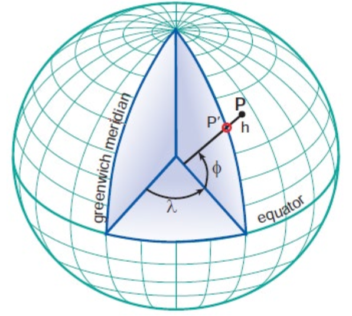
- Geographic Latitude (φ)
- the angle between the ellipsoidal normal through point "P" and the equatorial plane
- Geographic Longitude (λ)
- angle in the equatorial plane between the zero median and the meridian of point "P"
- Elipsoidal Height (h)
- the distance along the normal from the surface of the ellipsoid.
- Geometric surface (Geoid): An equipotential surface where gravity is constant everywhere. It approximates mean sea level extended through continents.
- Reference surface (Ellipsoid): A mathematical approximation of the geoid used for navigation and mapping. It's a smooth ellipsoid shape.
- Lines of equal latitude are called parallels. They form circles on the surface of the ellipsoid.
- Lines of equal longitude are called meridians and they form ellipses (meridian ellipses) on the ellipsoid of the Earth.
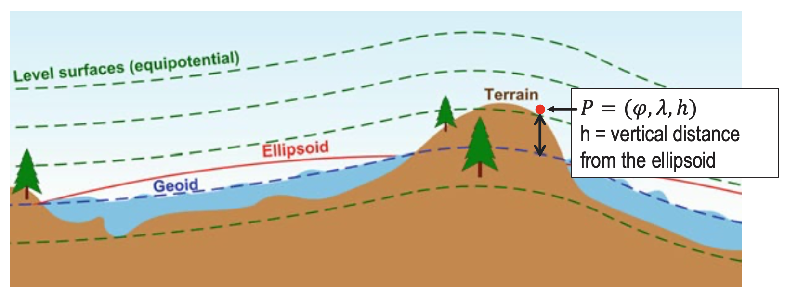
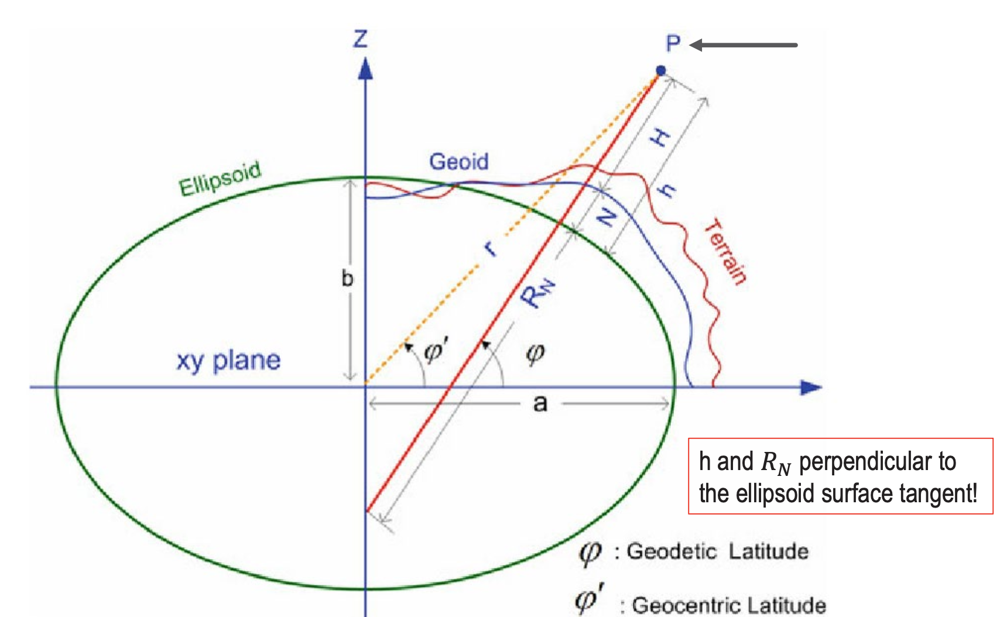
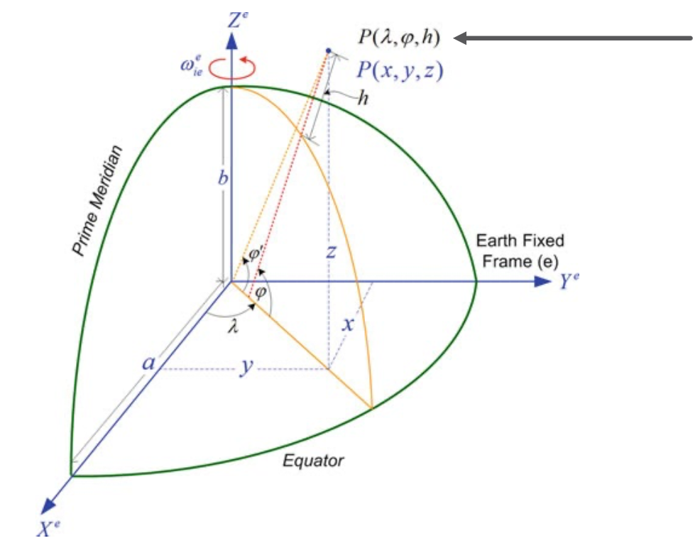
- The Earth is an ellipsoid (or a spheroid)
Geocentric Coordinate System ()
- Cartesian coordinate system
- Origin (0,0,0) is at the center of the Earth (goecentric)
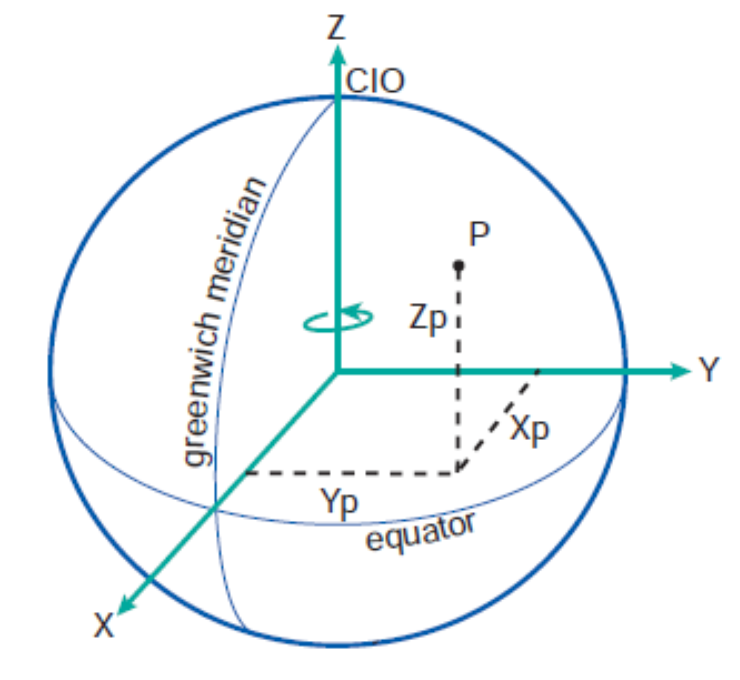
- Earth-centered, Earth-fixed (ECEF)
- OZ Axis – along the rotational axis
- OX Axis - lies on the equatorial plane and intersect prime meridian
- OY Axis – lies on the equatorial plane perpendicular to OX and OZ such that OX, OY, OZ form a right-handed coordinate system
Geographic coordinates to Geocentric
- The distance is
- The eccentricity squared is . Ellipsoid!
- Required is the projection of onto plane, and on axis:
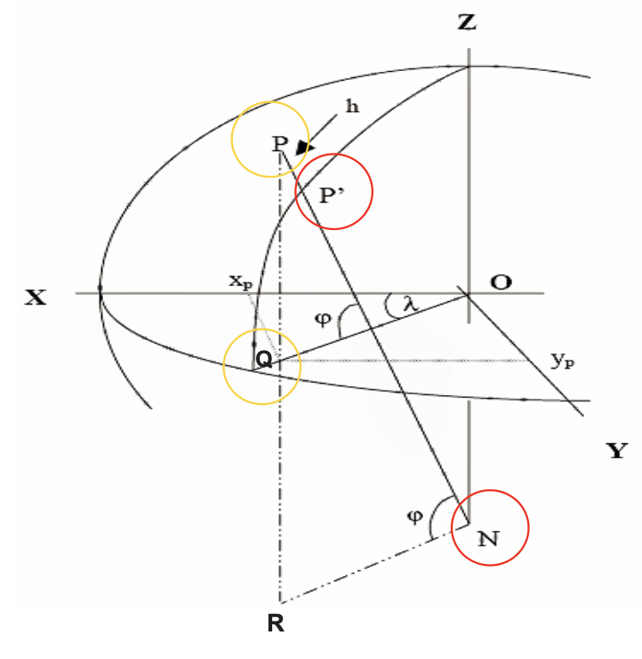
IMU Measurement, BODY FRAME
- Gyroscopes: 3 angular velocities in body frame (=b) with respect to Earth inertial frame (=i)
- Accelerometers, 3 specific forces in body frame.
- .
FROM EARTH INERTIAL TO BODY FRAME
- All IMU measurements are in body frame but relative to the inertial frame.
- How do we connect these two frames? We’ll use the following frames
- Earth-centered Inertial Frame (Inertial frame)
- Earth-centered Earth-fixed Frame (ECEF)
- Local-level (navigation) Frame
- Body Frame
EARTH-CENTERED INERTIAL FRAME (INERTIAL FRAME)
- The origin () is at the center of mass of the Earth ⇒ a geocentric coordinate system
- Z-axis: Along Earth’s rotation axis through the Conventional Terrestrial Pole (CTP).
- X-axis: In the equatorial plane pointing toward the vernal equinox (a fixed direction in space).
- Does not rotate with respect to the stars (inertial).
- Y-axis: Completes a right-handed coordinate system.
This frame is “inertial” because the x-axis remains fixed relative to distant stars rather than rotating with Earth. This is different from Earth-fixed frames (like latitude/longitude coordinates) which rotate along with the planet. The inertial frame is “inertial” precisely because it doesn’t accelerate or rotate - it maintains a constant orientation relative to distant stars.
EARTH-CENTERED EARTH-FIXED FRAME (ECEF)
- The origin (X=0, Y=0, Z=0) is at the center of mass of the Earth => a geocentric coordinate system
- The Z-axis is along axis of the Earth’s rotation through the conventional terresterial pole (CTP).
- The X-axis passes through the intersection of the equatorial plane and the reference maridian (Greenwich)
- Rotates as Earth rotates.
- The y-axis completes a right-handed system in the equatorial plane.
- Handy, since our robot moves with the Earth’s rotation!
LOCAL-LEVEL (NAVIGATION) FRAME, NEU
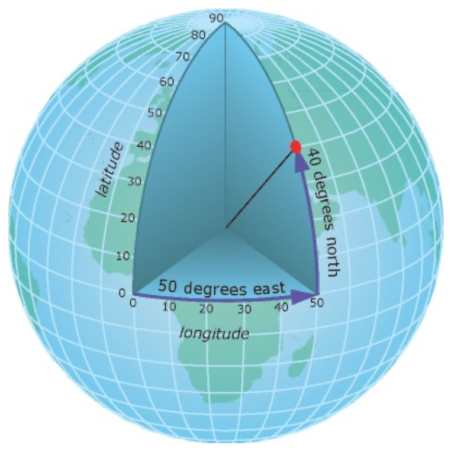
- The origin coincides with the center of the sensor frame.
- The Y-axis points to true north.
- The X-axis points to east.
- The Z-axis completes the left-handed coordinate systems but pointing up
- Determine the height above the chosen reference from GNSS (e.g., ellipsoid) or other measurements (e.g. terrain).
- Could be also used in right-handed NED format. Then down is positive, so height decreases as altitude increases (e.g., height = 0 at sea level, height = -500 m for an object 500 m above sea level
BODY FRAME
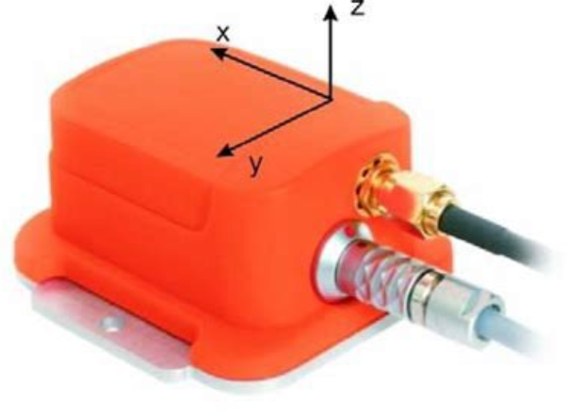
- The origin usually coincides with the center of mass of the vehicle.
- The y-axis points towards the forward direction.
- The x-axis points toward the right side of the platform.
- The z-axis points toward the vertical direction completing a right-handed system.
How to transform between the frames?
- Transformations from one frame into another are rotations for
- Acceleration
- Angular Velocity
- The subscript of the rotation matrix is the original frame and the superscript is the destination frame: .
- Rotations are linear transformations.
Rotation Matrices
- Attitude, velocity, acceleration and angular velocity are all vectors in 3D space: .
Frame indices: i (inertial), e (ECEF), l (local), b (body).
The rule of the right hand
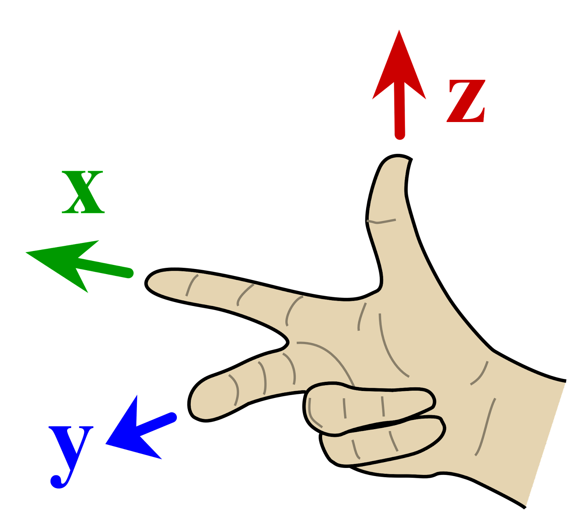
- For a right-handed coordinate system with axes x, y, z, we have the following cross product rules:
- Y x Z = X
- X x Y = Z
- Z x X = Y
Rotation from one system to another: DIRECT
1. ECEF to Inertial (Time-Dependent)
- Earth rotation rate vector: .
- This transformation is time-dependent because ECEF rotates with Earth while the inertial frame stays fixed relative to stars.
- Rotation matrix (time-dependent)
2. Local to ECEF
3. Body to Local
Rotation from Body Frame to ECEF and Inertial Frames
For these, the rotation matrices can be computed from those already defined as follows
4. Body to ECEF and Inertial
Their inverses are (since Rotation Matrices are orthogonal):
So as a drawing because this is very complicated to remember..
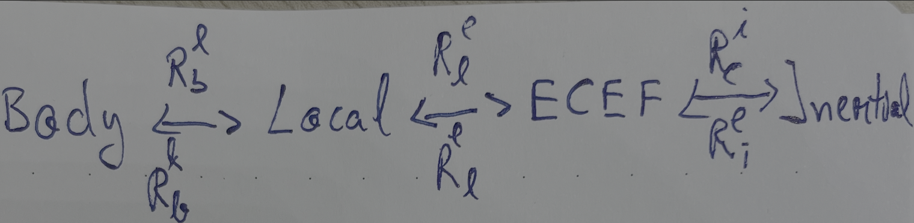
The same idea applies to the gyroscope measurements!
- is the rotation rate of the body with respect to the i-frame
- is the rotation rate of the body with respect to the local(navigation) frame
- is the rotation rate of the local frame with respect to the ECEF-frame
- is is the rotation rate of the ECEF-frame with respect to the inertial frame
Derivative of the Rotation Matrix
- Let’s consider the position vector .
- If we want to get the velocity, we do .
Why do we need the derivative of the rotation matrix?
- To transform velocities from one frame to another
- To transform accelerations from one frame to another
- To transform angular velocities from one frame to another
- So basically, the derivatives (not position or attitude, those use the basic Rotation Matrix).
The key challenge is to determine the time derivative of the rotation matrix . In Rotation Matrix Time Derivative I covered the mathematics behind finding the following solution:
Also, the second derivative (the acceleration) will be:
The last 3 terms are the Coriolis force, the Euler force and Centrifugal force respectively.
FICTITIOUS FORCES
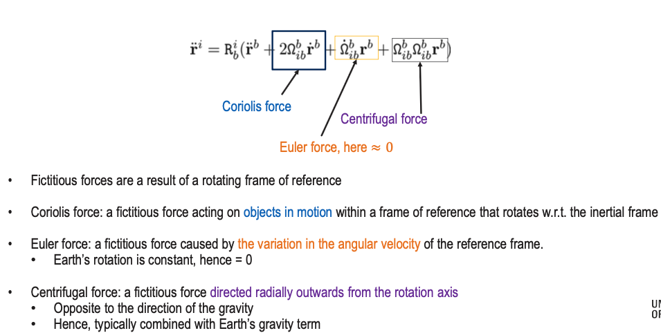
These deserve their own dedicated page. Will make one!
EARTH GRAVITY
The gravity field vector is different from the gravitational field vector. Due to Earth’s rotation, the gravity field vector is used more often and is defined as
where is the gravitational vector and is the skew-symmetric representation of Earth’s rotation vector with respect to the inertial frame, and r is the geocentric position vector. The second term in the above equation denotes the centripetal acceleration due to the rotation of the Earth around its axis. Usually, the gravity vector is given in the l-frame.
GIMBAL LOCK
Covered in Gimbal Lock. Basically, we lose one degree of freedom when two axes align in parallel.
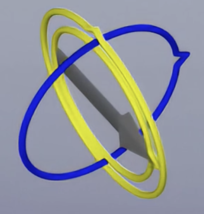
The solution is using Quaternions
QUATERNIONS
Covered in Quaternions. It’s a 4D way of representing rotations and orientations.
Homogenous Coordinates
Without homogenous coordinates, if we have 3 points
then
Rotation and scaling can be represented by a matrix, but translation cannot.
Translation requires vector addition.
Homogenous coordinates overcome this limitation by adding an extra coordinate (from (x,y,z) to (x,y,z,1) in 3D). This enables all transformations, including translation, to be represented as matrix multiplications.
Therefore, if now we have the same 3 points but represented as
then